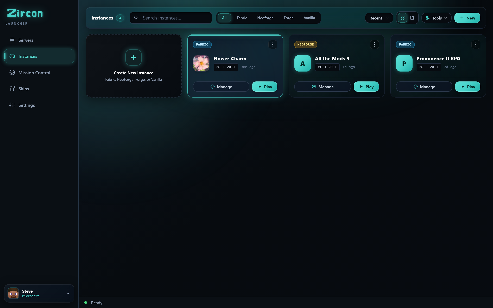
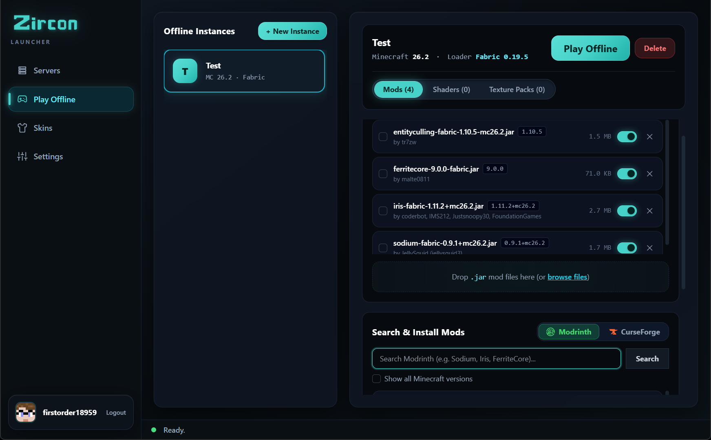
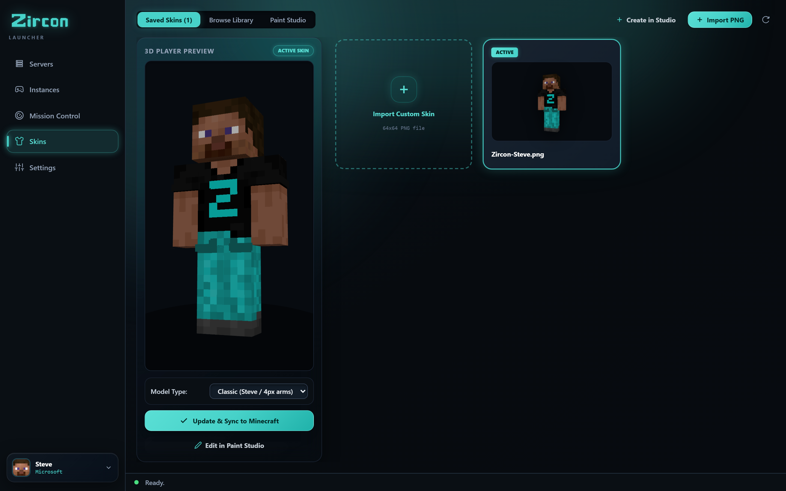
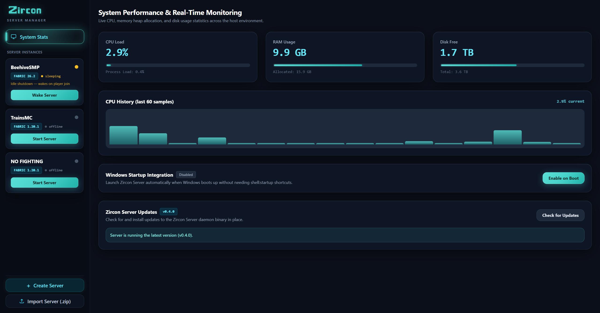
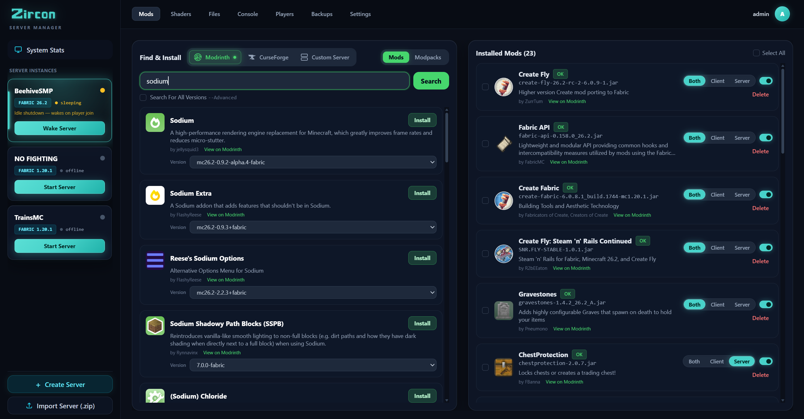

Select your guide below for step-by-step instructions.
Download the Windows setup from the Downloads page. Run the installer to place Zircon in your programs folder.
Launch Zircon and click Sign in with Microsoft. Your default browser will open to Microsoft's official login page. Sign in with the account that owns Minecraft Java Edition.
Click Add Server in the top bar and enter the server's domain or IP address (e.g., play.example.com). Select the server and click PLAY.
Zircon will automatically download the correct Minecraft version, mod loader (Fabric/Forge/NeoForge), and sync all server mods verified against Modrinth & CurseForge before launching into the game.

Click the Offline Instances tab in the sidebar. Click + Create Instance, pick your Minecraft version, choose a mod loader, and launch directly without connecting to a remote server.

Click your avatar in the sidebar to open the 3D Skin customizer. Preview your saved skins in 3D, upload custom PNGs, or search thousands of trending community skins fetched directly via API.

Grab the zircon-server zip package from Downloads. Extract the contents to a folder where you want your Minecraft instances and server files saved.
On first start, a secure random admin password is generated and printed in the terminal console. Open your web browser and visit:
Enter your generated admin password to access the web dashboard.

In the dashboard, click Create Instance. Choose your Minecraft version (e.g. 1.20.1), select your mod loader (Fabric, NeoForge, Forge, or Quilt), accept the Mojang EULA, and set allocated memory.
Open the Mods tab within your instance. Use the built-in search bar to browse millions of mods from Modrinth or CurseForge. Both repositories work out of the box with zero API key configuration. Click Install on any mod — Zircon handles dependency resolution automatically.

Because Zircon uses single-port multiplexing, you only need to forward port 25565 (TCP) on your home router. Share your public IP or DDNS domain (e.g. play.yourdomain.com) with your players. They type it in the Zircon Launcher and join right away.
Download the free player launcher, or get the self-hosted server manager.